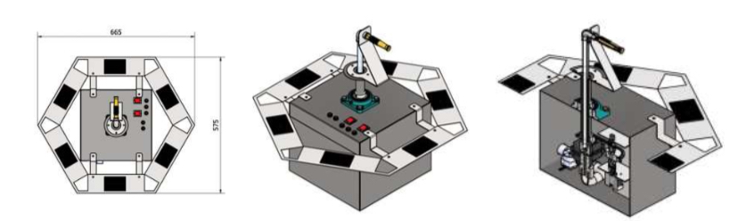
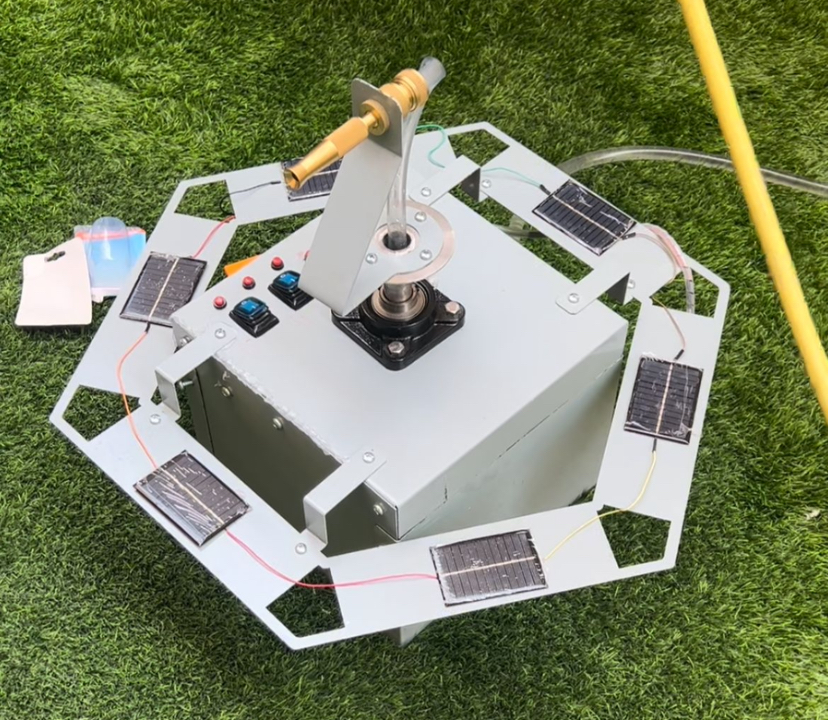

Projects
Smart Water Sprinkler – Senior Design Project
Developed a solar-powered irrigation system that minimizes water waste and energy consumption.



Electrical Engineer | Power Systems | Automation
Innovative Electrical Engineer specializing in power systems, automation, and smart energy solutions. With hands-on experience at the Ministry of Electricity & Water & Renewable Energy, I am dedicated to designing and optimizing electrical infrastructure.
Junior Electrical Engineer - Ministry of Electricity & Water & Renewable Energy
April 2024 - Present
Bachelor of Science in Electrical Engineering - Kuwait University
Developed a solar-powered irrigation system that minimizes water waste and energy consumption.
Email: fatemah.w.alenezi@gmail.com
Phone: +965 9903 1781
Location: Capital, Northwest Sulibikhat, Kuwait